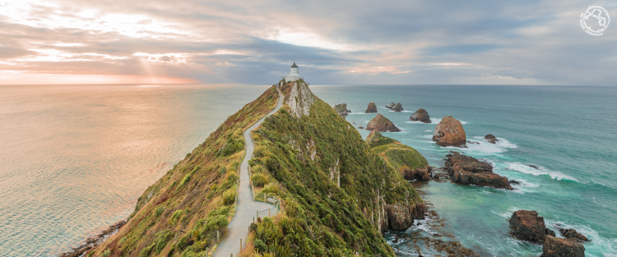
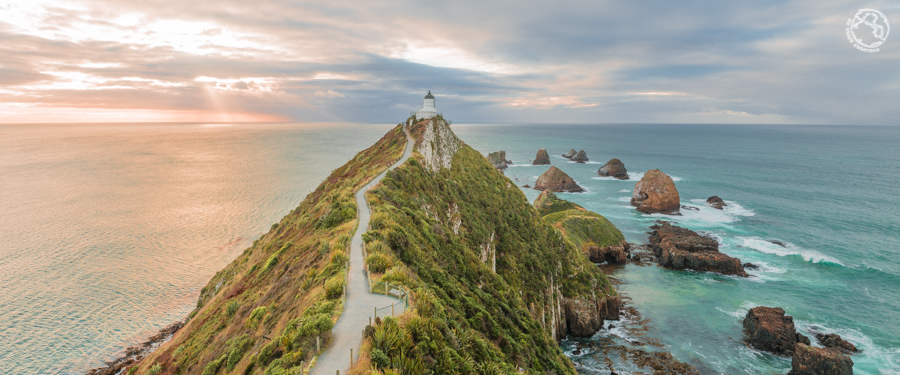
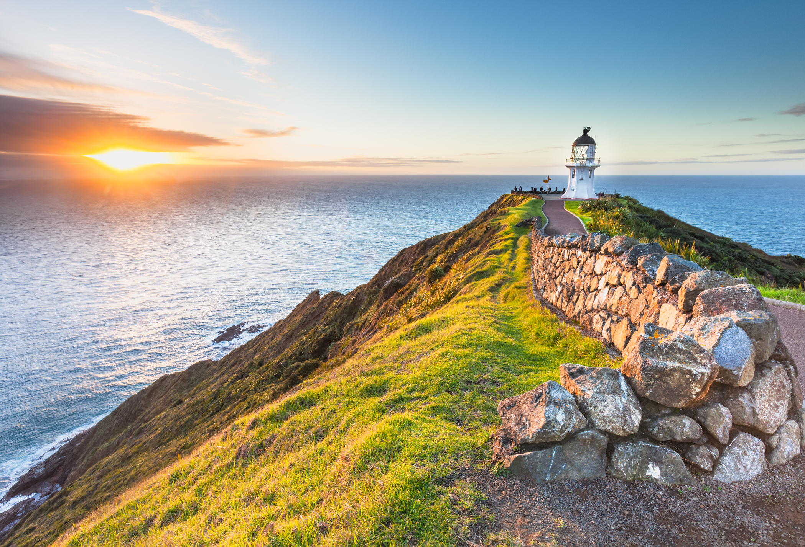
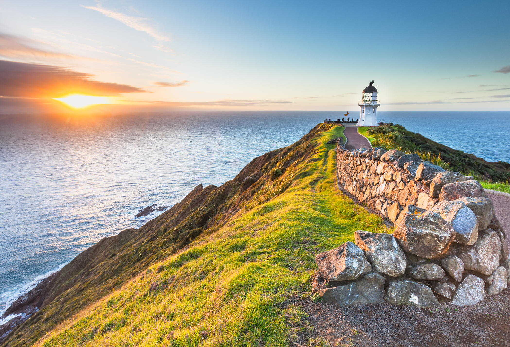

<
>

 

 

Volcanes activos, reservas en islas e historia son los principales atractivos de visitar la Isla Norte de Nueva Zelanda.
La Isla Sur de Nueva Zelanda alberga los paisajes naturales más puros que jamás experimentarás
Vaya por caminos menos conocidos, y explore paisajes únicos, fauna fascinante y belleza increíble.
Con paisajes impresionantes, actividades divertidas y habitantes simpáticos, no es extraño que todo el mundo ame estos lugares de Nueva Zelanda.
Nueva Zelanda es tierra de un inmenso y diverso paisaje. Acá verás cosas que no se encuentran en ningún otro lugar del mundo.
Los parques nacionales de Nueva Zelanda abarcan más de 30.000 kilómetros cuadrados, y tienen un paisaje natural hermoso listo para que lo explores.
Planifica tu viaje por Nueva Zelanda con nuestro mapa interactivo.
Usá esta calculadora para obtener el tiempo de viaje y la distancia entre dos puntos en Nueza Zelanda.
Compartir página.
Copyright © Todos los Derechos Reservados, creado desde 0 por Two Deax.